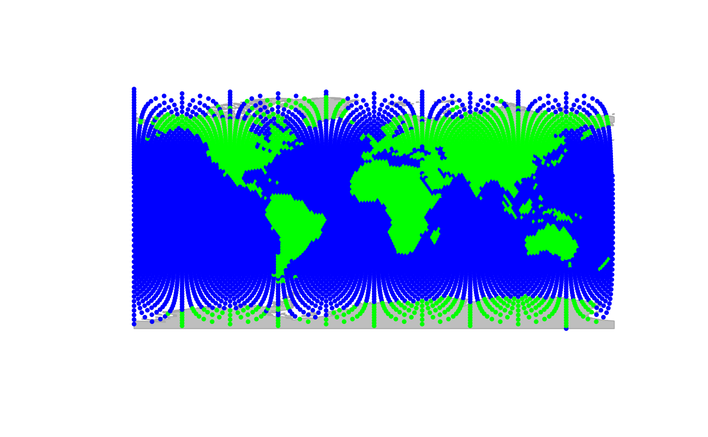
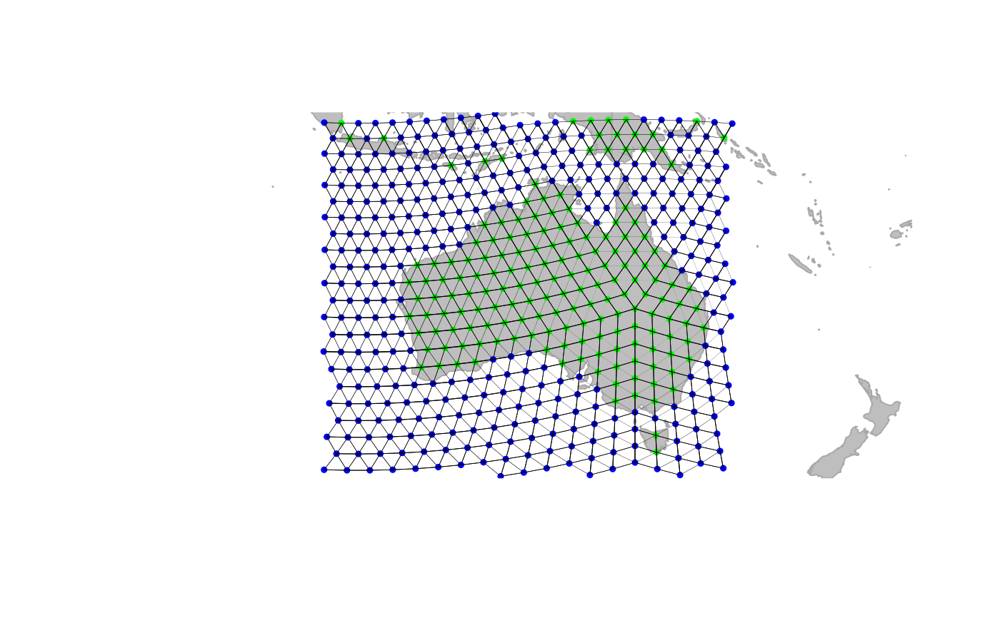

Set costs associated to edges based on geographic distances
Source:R/setDistCosts.R
setDistCosts.RdThe function setDistCosts sets the costs of a gGraph
object using the geographic distance. The cost associated to an edge is
defined as the great circle distance between the two nodes of this edge.
setDistCosts actually relies on rdist.earth of
the fields package.
Arguments
- x
a valid gGraph.
- ...
other arguments passed to other methods (currently unused).
Value
For the gGraph method, a gGraph object with appropriate weights. Note that former weights will be removed from the object.
Details
The notion of 'costs' in the context of gGraph objects is
identical to the concept of 'weights' in the library graph (and thus
graph::graphNEL) objects. The larger it is for an edge, the less
connectivity there is between the couple of concerned nodes.
See also
The getCosts accessor, returning costs of the edges
of a gGraph object in different ways.
Other cost_functions:
combineCosts(),
dropCosts(),
getCosts(),
hasCosts(),
setCosts()
Examples
plot(rawgraph.10k, reset = TRUE)
#> Spherical geometry (s2) switched off

#> Spherical geometry (s2) switched on
geo.zoomin(list(x = c(110, 150), y = c(-10, -40)))
#> Spherical geometry (s2) switched off
#> Spherical geometry (s2) switched on
plotEdges(rawgraph.10k)
x <- rawgraph.10k[isInArea(rawgraph.10k)]
#> Area: lon = [103.2044, 156.7956], lat = [-46.6000, -3.4000]
#>
#> Reproducible call: reg = list(x = c(103.2044, 156.7956), y = c(-46.6000, -3.4000))
x <- setDistCosts(x)
plotEdges(x)

head(getCosts(x))
#> $`150`
#> 10038 151 10037 471
#> 153.5122 135.5409 159.0169 159.0779
#>
#> $`151`
#> 10039 471 152 150 10038 472
#> 152.7608 152.4379 136.0023 135.5409 159.8605 159.9643
#>
#> $`152`
#> 10040 472 153 151 10039 473
#> 152.0093 151.6441 136.5697 136.0023 160.7123 160.8551
#>
#> $`153`
#> 10041 473 154 152 10040 474
#> 151.2579 150.8388 137.2289 136.5697 161.5831 161.7623
#>
#> $`154`
#> 10042 474 155 153 10041 475
#> 150.5036 150.0351 138.0768 137.2289 162.4662 162.6196
#>
#> $`155`
#> 10043 475 156 154 10042 476
#> 149.6651 149.2157 138.9751 138.0768 163.3113 163.5481
#>